INICIO SAGA AMIGOS y ENEMIGOS QUIDDITCH HORROCRUXES RELIQUIAS CONTACTO
En el siguiente video aparece un recuerdo del profesor de pociones, donde Tom Riddle (Lord Voldemort) esta estudiando magia de pequeño en Hogwarts y le pregunta al profesor que qué es un Horrocrux...
VIDEO
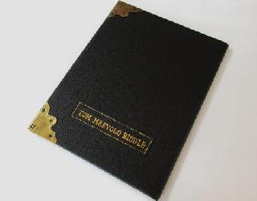
1. Diario de Tom Riddle
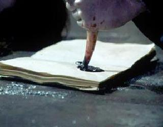
Harry destruye el diario en la 2ª peli cuando lucha con el basilisco
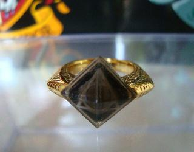
2. El Anillo de Sorvolo Gaunt
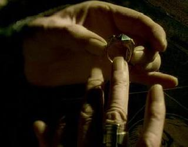
Albus Damblendore destruye el anillo antes de morir
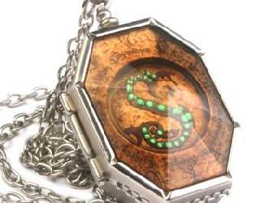
3. Guardapelo de Salazar Slytherin
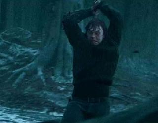
Ron destruye el guardapelo con la espada de Gryffindor
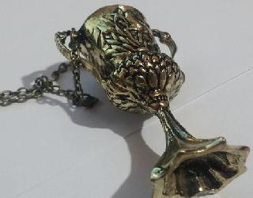
4. La Copa de Helga Hufflepuff
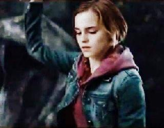
Hermione destruye la copa
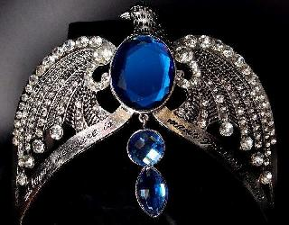
5. Diadema de Rowena Ravenclaw
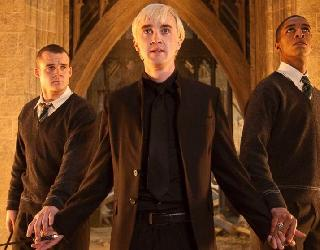
Crabbe, el amigo de Malfoy, destruye la diadema
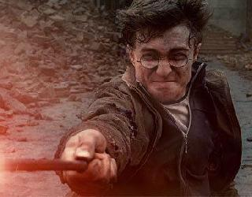
6. Una parte de Harry Potter es un horrocrux
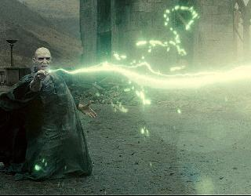
Voldemort con la maldición asesina (AVADAKEDABRA) destruye esa parte de Harry
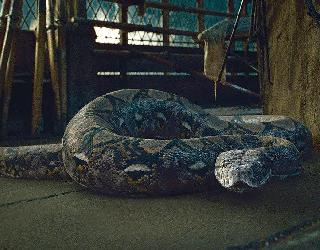
7. Nagini, la serpiente de Voldemort
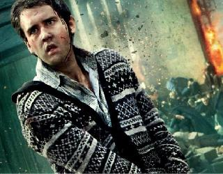
Neville destruye a Nagini con la espada de Gryffindor
1. Diario de Tom Riddle
Página creada por: Lucía Flores Padilla - Trabajo Lenguaje de Marcas - diciembre 2017